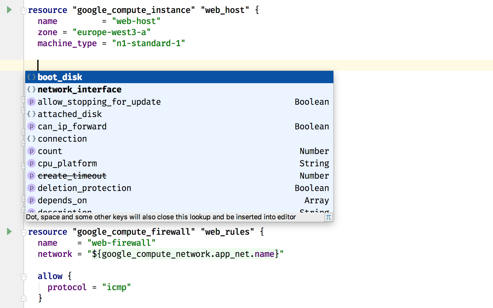
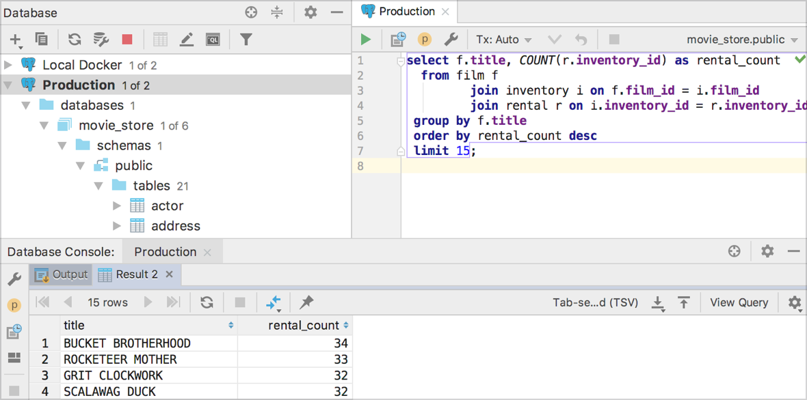

填写该调查表—
获得所有产品包的三个月订阅
以JetBrains工具进行
阿里巴巴云（阿里云）
开发
适用于JVM的人体工程学IDE
擅长以Java、Scala、Groovy和Kotlin进行卓越的企业、移动和Web开发
智能代码补全
仅智能补全当前上下文预期的类型

特定于框架的协助
多种语言的智能编程辅助：SQL、JPQL、HTML、JavaScript等等。

提高生产力
该IDE自动处理繁琐和重复的开发工作，使您得以专注于大局

从第一次开始就无法战胜的工具集

基础结构的代码
JetBrains IDE以HashiCorp配置语言（HCL）插件为您的基础结构的代码增色

加快分析问题
分析从日志中获得的堆栈跟踪
只需将堆栈跟踪复制粘贴到IDE中

MaxCompute Studio
阿里巴巴云制作的在MaxCompute平台上工作的IntelliJ插件。
支持SQL、UDF扩展、MapReduce、Debugging等等。
构建工具
与Maven、Gradle、SBT、Grunt、Bower和其他构建工具无缝集成

版本控制系统
统一支持Git、GitHub、SVN、Mercurial、Perforce和其他版本控制系统

Android
Android Studio是Google制作的官方Android IDE，IntelliJ IDEA使用与其相同的IntelliJ平台和核心功能

支持SSH、Docker和Vagrant

在Docker Containers中调试代码

社区版
JVM和Android开发的免费开源IDE
旗舰版
成熟的Web和企业开发商业IDE
了解更多并下载
jetbrains.com/idea
以JetBrains工具进行
阿里巴巴云（阿里云）
开发
DataGrip
一个工具，多个数据库
与数据集成
从IDE连接到您的阿里巴巴云（阿里云）SQL数据库

填写该调查表—
获得所有产品包的三个月订阅
以JetBrains工具进行
阿里巴巴云（阿里云）
开发
TeamCity
强大的连续集成 创造性的
部署应用程序
创造性的支持Docker、Kubernetes等等

方便的web界面
在项目概述页面构建和构建配置

方便的web界面
VCS变更日志和DVCS图

先进的VCS集成
直接从GitHub/Bitbucket存储库创建项目

构建链
完美适合部署管道

定价灵活

填写该调查表—
获得所有产品包的三个月订阅
以JetBrains工具进行
阿里巴巴云（阿里云）
开发
YouTrack
适用于软件敏捷团队的问题跟踪器
随时掌握团队的活动
使用实时仪表板

瞬间找到所需东西
使用智能搜索查询

敢于敏捷
遵循Scrum或Kanban

计划冲刺和管理积压工作
及时交付优秀产品

采用云还是单机版？ 两种选择YouTrack都可以提供
并且准备好和贵公司一起成长

填写该调查表—
获得所有产品包的三个月订阅
以JetBrains工具进行
阿里巴巴云（阿里云）
开发
代码审查。 团队合作。 项目分析
改善代码、项目和流程
自动化代码审查工作流
把日常工作交给Upsource！

享受浏览器内的代码洞察
浏览器中的静态代码分析和代码感知导航，用于

在IDE查看变更
Upsource Integration插件已可用于：

以JetBrains工具进行
阿里巴巴云（阿里云）
开发
填写该调查表—
获得所有产品包的三个月订阅
Kotlin
用于JVM、Android和其他浏览器的静态类型编程语言